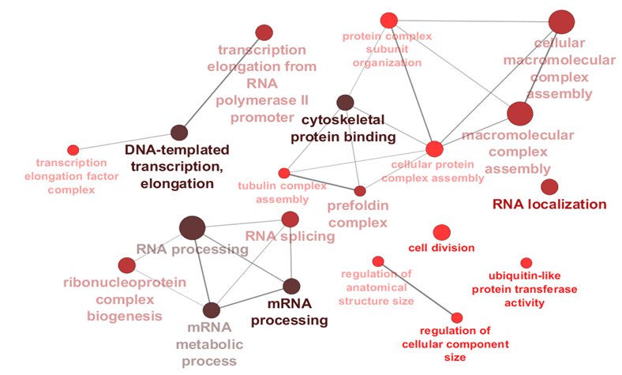

Hi, I'm a full-stack developer in Vancouver, BC. I like data, cool technology, and building useful stuff. I enjoy learning pretty much any technology, anywhere in a stack, and I like to wear different hats in everything I do. Take a look below to learn more about my experiences.
Web Developer (Dec 2017 - Present) @ Canucks Sports & Entertainment
As a full-stack developer with the Vancouver Canucks, I manage all websites across the organization, in addition to assisting our Digital & Marketing team with technological implementations. I am currently working on a distributed messaging system to ingest our fan data and feed into a customer relationship management (CRM) system & automated marketing system.
Developer Intern (Sept 2017 - Nov 2017)
Web Development Bootcamp (May 2017 - June 2017) @ Lighthouse Labs
My development career began at Lighthouse Labs, where I completed the Web Development Bootcamp. Immersed in an intense 9 weeks program covering full-stack development, I successfully built multiple web applications primarily using JavaScript.
Combining my development skillset along with my statistical experience, I performed different analyses within the Canucks organization. I implemented a logistic regression model to generate risk levels of season ticket members, using previous year's data as a training set, and assisted our sales team in member retention.
My analytics are done in Python, using libraries including pandas, scikit-learn, and numpy. In order to present my findings across the business to different stakeholders, I focus on data visualization using matplotlib and ggplot-python in order to effectively communicate the data and business solutions.
My experience as a programmer started with analyzing my own biological experiments while completing my Masters of Science. Not satisfied having our bioinformatician analyzing my genomic datasets, I took multiple classes in statistics using R to apply normalization, batch correction, and hierarchical clustering to examine microarray and next generation sequencing data.

Masters of Science - Pharmaceutical Sciences (2016) @ University of British Columbia
Bachelor of Science - Biochemistry (2013) @ University of British Columbia
My science career started by just being curious of how things worked, particularly in chemistry and eventually biology. I was not satisfied with phrases such as "your body will adapt" or "the cell will mount a response". I always wanted to dig deeper, go smaller, understand how mechanistically things (i.e proteins, genes) interacted at a chemical level. Eventually that led to biochemistry and what seems natural now, drugs and pharmacogenomics.
My thesis examined the Baker's yeast Saccharomyces cerevisiae in low oxygen (hypoxia) environments, in combination with different cancer therapeutics. These well-studied drugs were great candidates in identifying cellular level responses that resulted in drug resistance and reduced drug efficacy.
While there are no "Current Experience" for my Scientist hat, I hope to one day combine my current technical skillset to contribute to life sciences and health technology. Recognizing the need for individuals from both sides, I hope to bridge the gap between the two sectors.
Outside of work, I am a huge hockey fan. Since I'm with the Canucks, I am usually either working, watching, or playing hockey in some capacity. I enjoy many other sports, including volleyball, golf, and tennis. I enjoy organizing events and recretional teams, always wanting to bring my friends together in our busy lives.
Like my professional life, I enjoy doing many different things in my personal life as well. Besides sports, I enjoy gaming, cooking, and photography. I enjoy trying new experiences, even if it means I am absolutely terrible at it. I'm a firm believer that anything can be enjoyable with the right company. Recently I went to a ceramics workshop with my girlfriend and made a pretty questionable whale plant pot, which is now the home to a plant I desperately am trying to keep alive.
I am also a morning person. Bold and darken for emphasis. As dark as my black thumb, please send me gardening advice.